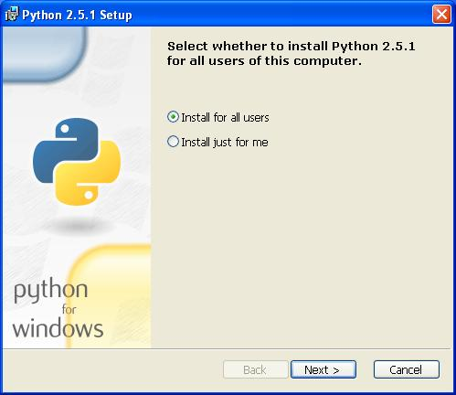
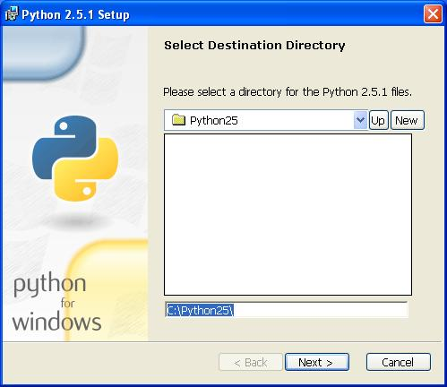
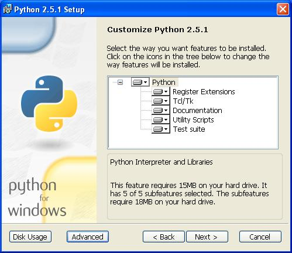
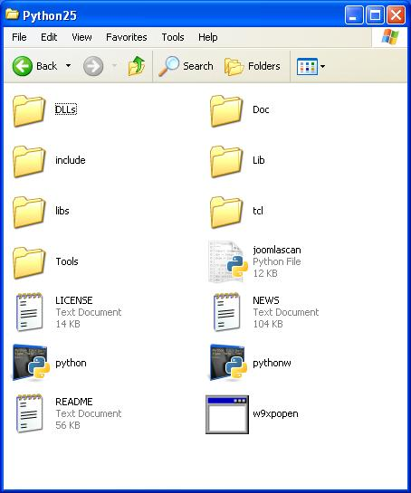
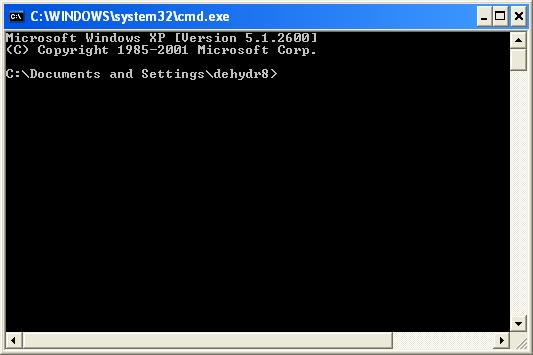
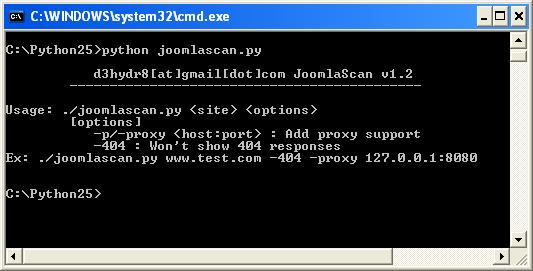

Installing Python in Windows and Running a Script
by d3hydr8 > www.darkc0de.com
date: 12/30/07 Installing Python in Windows and Running a Script 1.) First thing you need to do is visit http://www.python.org/download/ and download the Windows installer. Download Link: http://www.python.org/ftp/python/2.5.1/python-2.5.1.msi 2.) After downloading the install file, locate it, right click and choose Install 3.) The first window that shows up gives you the choice of who to install python for.  4.) The second window is asking you where you would like python installed. Default directory is C:\Python25\ but I have seen many people shorten it to C:\Py\ or C:\Python\.  5) The third window is asking you how you would want python installed. You can make your own judgements here but I suggest just clicking Next.  6.) Thats it!!! At this point you should see it go through the installation process. Click Finish when it is complete. Now that python is installed lets go download a python script and run it. 1.) First we find a python script and save it with the extension .py In the picture you can see we found a joomla scanner and saved it as joomlascan.py in our Python directory C:\Python25  2.) Now lets run the command prompt by going to Start >> Run and typing cmd.exe and hitting Enter Your command prompt (cmd.exe) should load and be ready for commands.  3.) Now we need to move to where we installed python (C:\Python25) with the cd command. After typeing cd C:\Python25 and hitting Enter you should see. C:\Python25>_ 4.) At this point you can use the dir command to view the files but we already know joomlascan.py is in this directory. 5.) To run the script all you have to type is: python joomlascan.py 